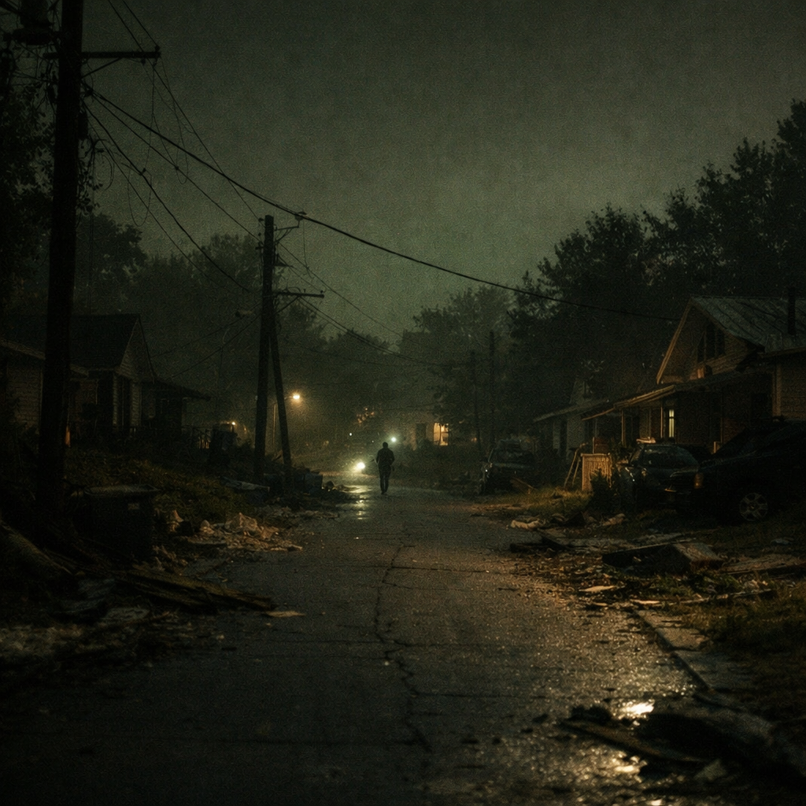

Origin
Built from what was experienced, not imagined.
This didn’t start as a product idea. It started with loss.
After Hurricane Helene, everything changed at once — housing, transportation, daily structure, and most importantly, communication. When networks go down, people don’t just lose signal — they lose coordination, access to information, and the ability to check on each other.
NodeBlk comes from that moment. It’s a response to what happens when people are left without a reliable way to connect.
Lived experienceBorn from surviving infrastructure collapse, not from a hypothetical scenario.
Community-firstDesigned for the people most likely to be hit first and served last.
Actionable designBuilt to communicate, guide, and support local coordination immediately.
Scalable missionStarts with neighborhoods and grows into a citywide resilience layer.

From disruption to design
The path from crisis to solution
- Disaster impact
Home, transportation, belongings, and daily stability were disrupted by Hurricane Helene. - Communication loss
Networks and reliable access to information became limited when they were needed most. - Problem reframed
The question became: what would a neighborhood-owned communication tool look like? - NodeBlk created
A resilient device concept focused on off-grid messaging, survival guidance, and local connection.